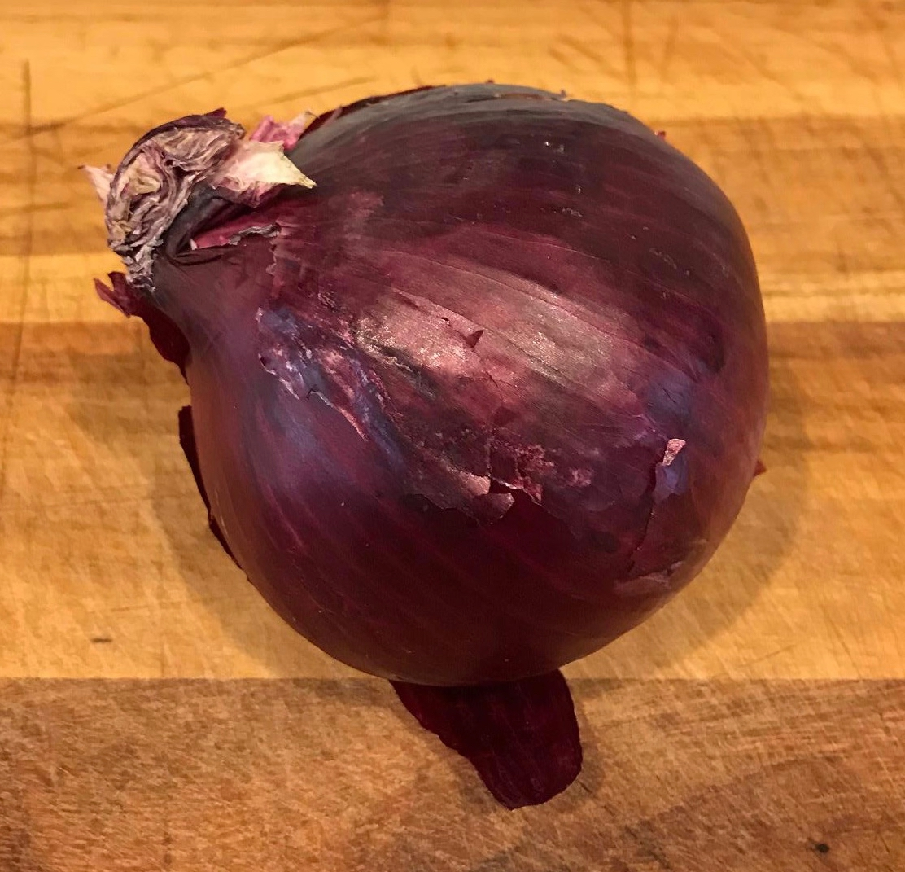
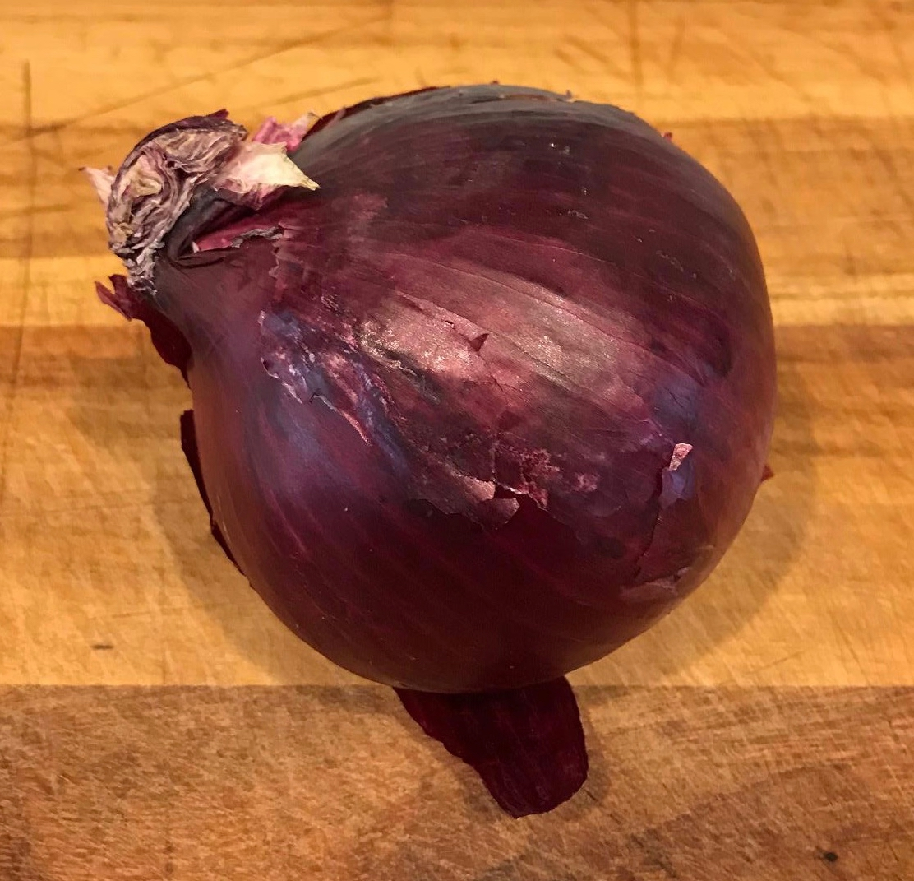
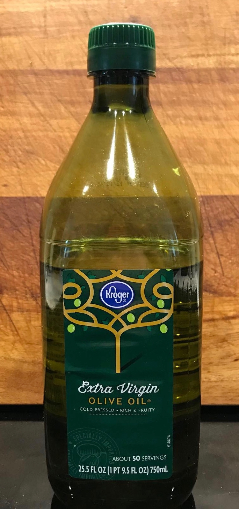
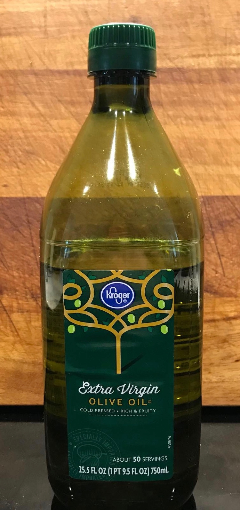
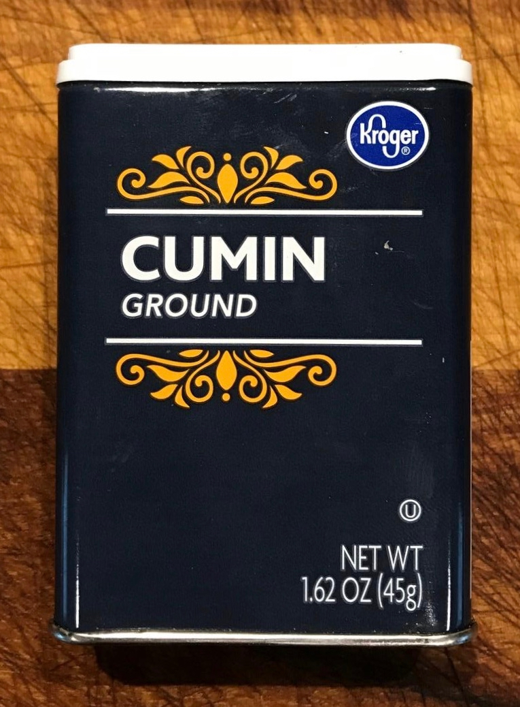
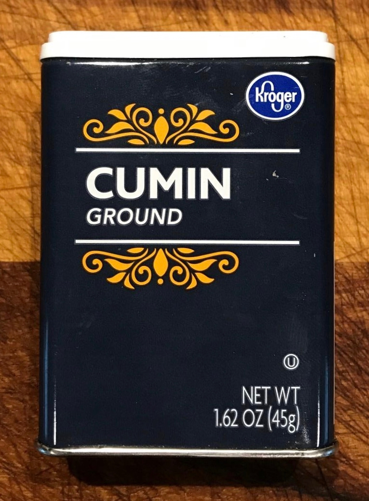
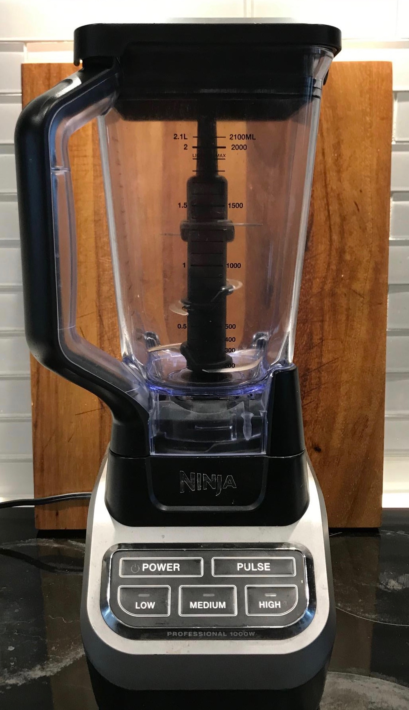
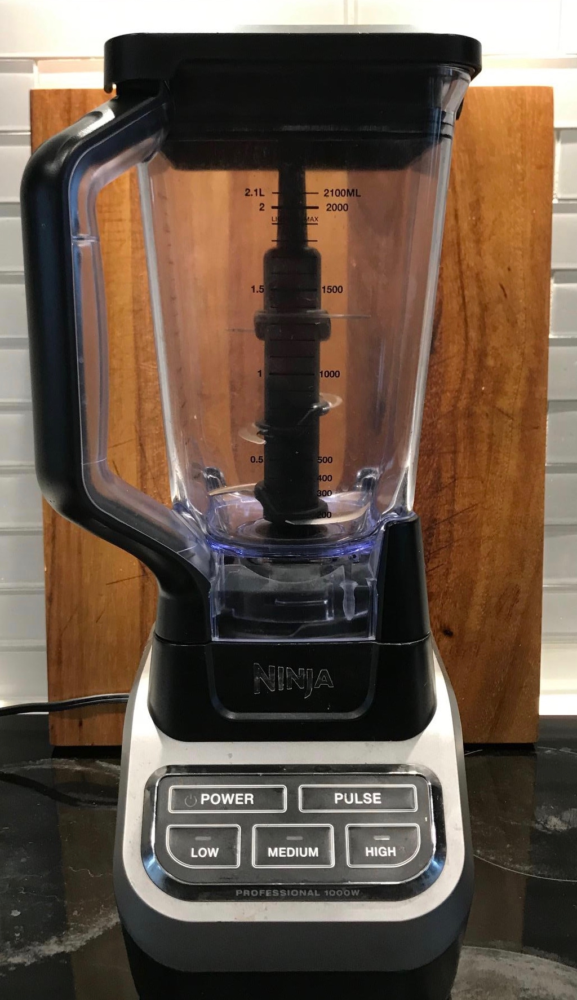

Chicken Tinga Tacos
Ingredients
- chicken,1 lb
- fire roasted tomatoes, 1 can
- chipotle peppers, 2 - 3
- yellow (sweet) onion, 1 whole
- red onion, 1/2
- garlic, 2 cloves
- chicken broth, 1 can
- olive oil, 1 tbsp
- cotija cheese, to taste
- oregano, 1 tbsp
- ground cumin, 1 tbsp
- taco seasoning, 1/4 cup
- butter, 2 tbsp
- corn tortillas, 12
Credit Where Due
This recipe is inspired by (and nearly identical to) a recipe from
The Minimalist Kitchen
as mentioned in the pinch of yum blog.
Kitchen Gear
- Instant Pot or pressure cooker
- pan/skillet, 2
- blender
Commentary
- Start the chicken about 15 minutes before everything else
- Cook tortillas while preparing sauce and keep warm in foil and/or in oven at 170° F
-
There are infinite wonderful toping options. Consider sprinkling any of the following as garnish
- cilantro
- green onion or chives
- squeezed lime juice
- fresh diced basil
Cook Chicken
- In Instant Pot or pressure cooker, add
- 1 lb of chicken
- chicken broth until chicken is nearly covered
- taco seasoning, to taste (usually 20 shakes of the container or so)
- Mix ingredients until distributed evenly
- Cook 25 minutes under pressure
- Chop or shred when cooked
Cook Sauce
- Add 1 tbsp olive oil to pan and set to medium heat
- Add 1 roughly chopped yellow onion and stir occasionally until wilted
- Add 2 cloves garlic and 2 - 3 chipotle peppers, medium chopped. Stir and sizzle for 1-2 min.
-
Add
- Fire roasted tomatoes, 1 can
- oregano, 1 tbsp
- ground cumin, 1 tbsp
- chicken broth, rest of can or 1/4 cup
and sizzle on medium heat for 8 min
- Remove from heat and let cool until comfortable to touch
- Blend until smooth
- Return to pan and stir in chicken (chopped or shredded)
- Cook on medium heat for 5 min then reduce to low until ready to serve
Cook Tortillas
- Bring pan to medium-high heat
- Rub butter over hot pan and lay tortillas in pan
- When tortillas brown on bottom, rub butter on top and flip
- Remove from heat when brown to taste on both sides
- Repeat until all tortillas cooked
Combine and Serve
- Dice red onion
- Top tortilla with chicken & sauce mixture
- Sprinkle red onion and cotija cheese to taste
- Enjoy!


 


 

 



 
